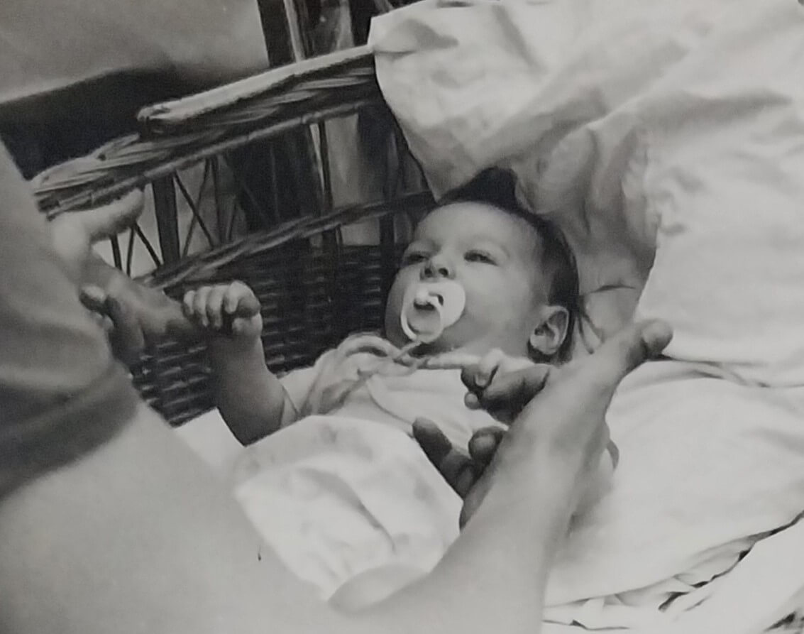
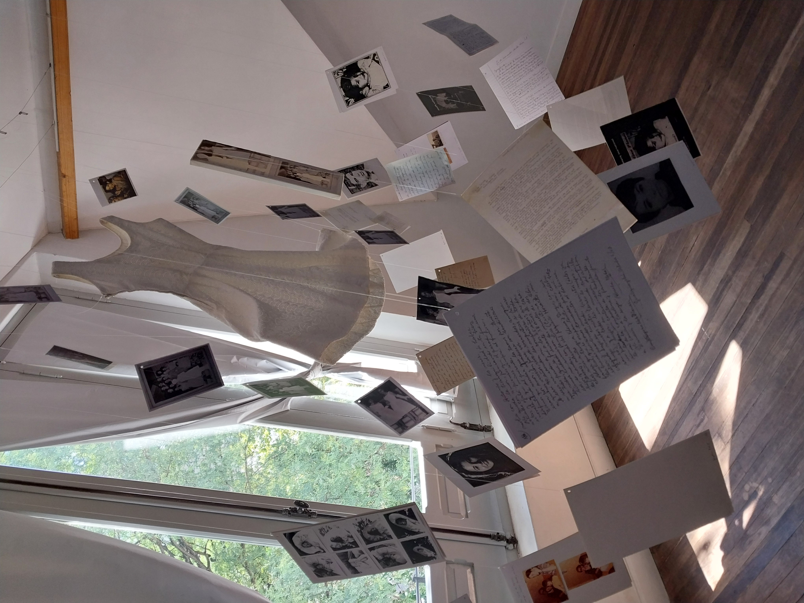

"Toda mi obra refleja este proceso de búsqueda constante de mi verdadera identidad, y por eso
la diversidad de técnicas y estilos...
Esta búsqueda continúa, es un camino largo, al que todos estamos llamados como seres humanos, reencontrarnos con
nuestra historia, con nuestras raíces, con nuestro SER."

Sobre mí
Un recorrido por mi historia.
Ver más »
Catálogo de Obra
Galería de mis obras y acceso al catálogo.
Ver más »

Muestras de Arte
Exposiciones e imágenes de las instalaciones
Ver más »